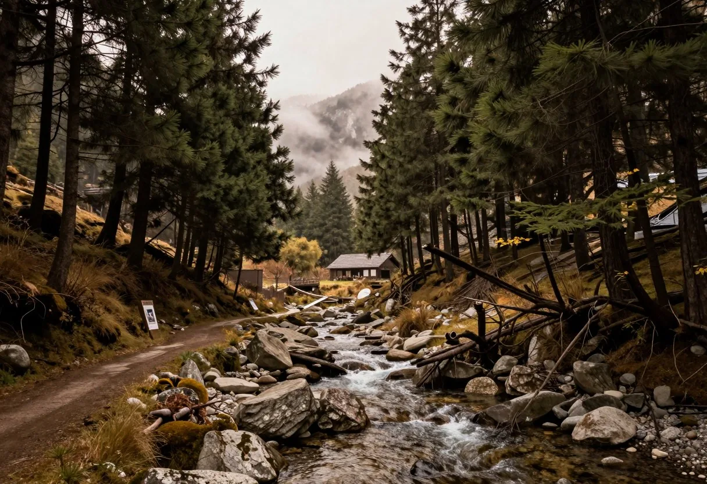
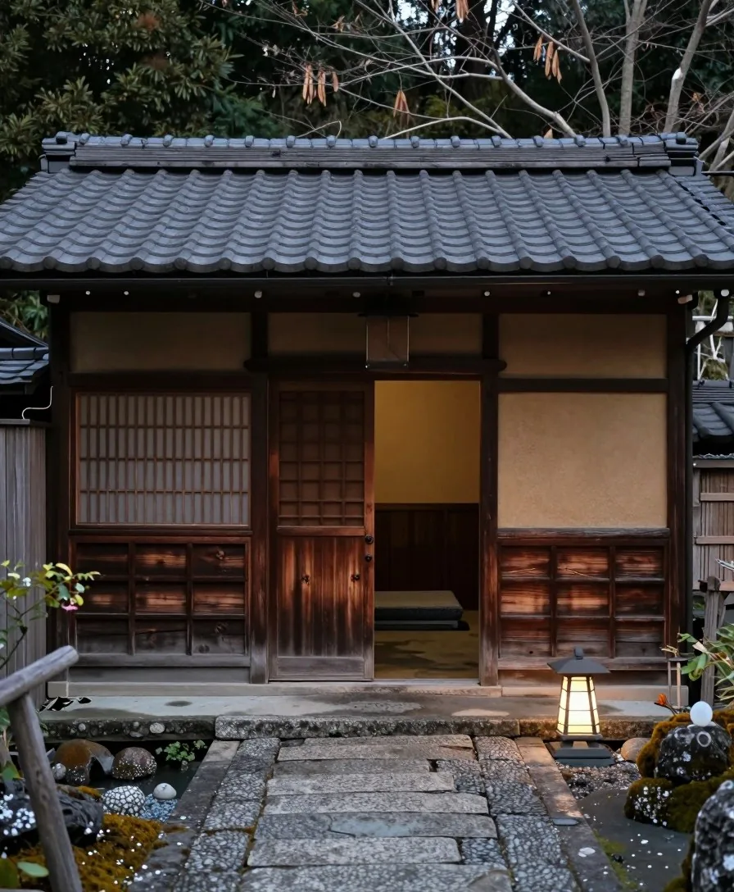
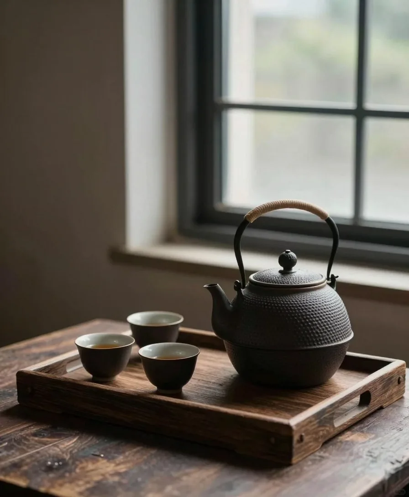
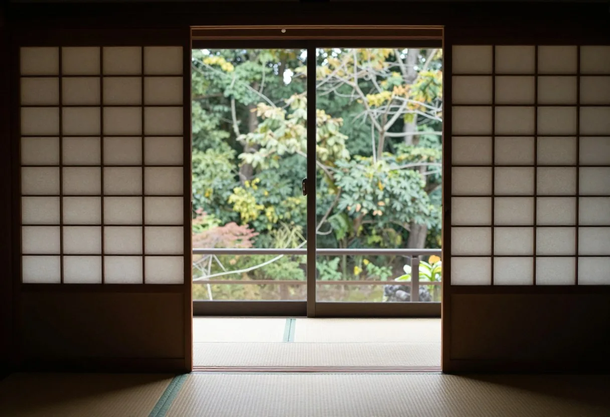

山あいに、宿を構えた理由
川沿いの岩のあいだから、澄んだ湯が湧いていました。人の手で飾らなくても、すでに十分に美しい場所だったからです。
杉の木立と渓流の音を借りて、建物は谷のかたちに沿って建てられました。

ABOUT
湯守の小屋からはじまった、小さな湯宿のこと。
湯の音だけが、聞こえる。それは、この宿がはじまった頃から変わらない景色です。
澄川は、谷あいに十二の客室を構える小さな湯宿です。明治の頃、ひとつの湯守の小屋からはじまり、いまも湯のそばで、お客様をお迎えしています。

川沿いの岩のあいだから、澄んだ湯が湧いていました。人の手で飾らなくても、すでに十分に美しい場所だったからです。
杉の木立と渓流の音を借りて、建物は谷のかたちに沿って建てられました。

柱も梁も、できるかぎり当時のまま磨いて使っています。庭の石、廊下の格子、お部屋の器や調度も、古いものを直しながら受け継いできました。
新しく足すときも、「百年後に古びて美しいか」を基準にしています。

ご案内は、必要なときに、必要なだけ。話しかけすぎず、けれど気づいたときには、そばにいる。
お客様がご自分の時間を過ごせることが、私たちのもてなしです。

床には温もりを、寝具には休まる深さを、お部屋には静かな通信環境を。趣を損なわない形で、現代の快適さをそっと整えています。
昔のままの宿ではなく、昔の良さを残したまま、いまの暮らしに寄り添う宿でありたいと考えています。